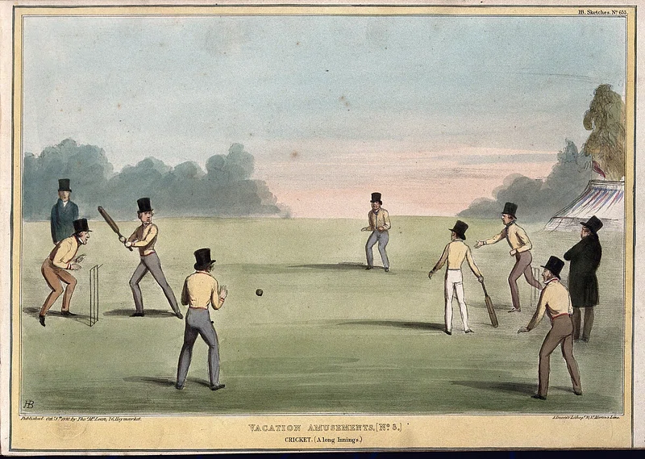
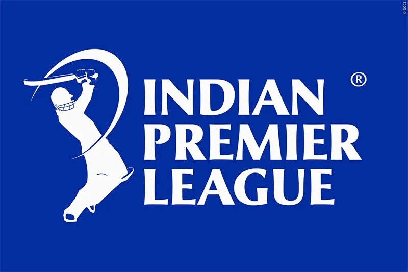

Cricket
 What is Cricket?
Cricket is a bat and ball game played between two teams of eleven players on a field. Two teams divide themselves as striking team and fielding team alternatively. The goal for striking team is to score runs by hitting the ball with a bat while the fielding team stop the score by fielding.
It is also called as the Gentlemen's Game, it was first played in 16th century in South East England.It is played in cricket fields all over the world in many countires. There are so many forms of Cricket: for both Men and Women respectively
- Test cricket
- First-class cricket
- One Day International
- Limited overs (domestic)
- Twenty20 International
- Twenty20 (domestic)
- Test cricket
- First-class cricket
- One Day International
- Twenty20 International
- Twenty20 (domestic)
Indian Premier League- IPL
IPL is a professional twenty20 league in India. It is organized by the Board of Control for Cricket in India (BCCI). It was first introduced in 2007, the league featured ten city based franchise teams. It is the most popular and viewed sports competition in India, as per the news. Each team is owned by different business companies and some really rich people.
The IPL has a unique system for player acqusition, squad composition, and salaries:
Player Acqusition: Players are picked in an annual auction where teams bid for them. If a player is unsold, they can be signed as a replacement. Trades happen in specific windows and need player consent.
Salaries: The salary cap for each squad is ₹120 crore. Top players earn an average of ₹12.37 crore, but this is for the tournament’s short duration (around two months), so their salary is often calculated as an annual figure.
Player Contracts: Contracts run for one year, with possible extensions. Domestic players are now included in the auction, unlike before when they were signed separately.
Revenue: IPL players receive 18% of the revenue, which is lower compared to other major sports leagues where players get around 50%.
Foreign Players: 10% of their salary is sent to their home country’s cricket board.
In short, the IPL balances player signings, trades, and salaries under strict rules, with players earning big, but also sharing a smaller portion of the league’s revenue compared to other sports.